Soulace
Coping with the death of a loved one is not an easy task. There is a need for a service for such situations that can make the experience of dealing with hospitals, funeral homes, offices and their convoluted formalities a less unpleasant one.
I worked on conceptualising and designing this service experience during my Masters.
Background
Death is an unavoidable part of life and dealing with that of a loved one is perhaps the most difficult task that one faces in life. Besides coping with the emotional trauma, one also has to take care of everything associated with the deceased — starting from performing the last rites to settling the official matters to provide for his family.
A lot happens over a very short span of time, which involves interacting with various stakeholders, understanding their processes and working accordingly to fulfil one’s goals. Not surprisingly though, an entire industry has evolved around this. While there is no official estimate, the death-care industry is worth about $2.5 billion in India (as of 2015), where about 8.5 million die every year. The US death-care industry is worth nearly $20 billion.
Death-care industry — companies and organizations that provide services related to death: funerals, cremation or burial, and memorials, including funeral homes, coffins, crematoria, cemeteries, and headstones.
The Problem
So how did people manage death before all these?
Generally, it worked on the basis of information that was passed on through families or friends. And even today, it works that way for people who have lived at the same place for the most part of their lifetime. But as families get nuclear and spread across for education and jobs, access to such means of information diminishes.
The current death-care companies are mostly service providers of some form — cremation, burial, repatriation and so on and they operate locally. Even though one can find them on the internet, actually availing their services is still daunting because the different service providers need to be understood and dealt with separately. Also, with the increasing population, the demand for the services has also increased. Availing them requires aquiring the right information and taking the right actions — something that can be eased with the use of technology today, without increasing the cognitive load on the person.
Also, these service providers do not deal with how the person handles official work like insurances and banking, nor do they have proper information systems in place.


The Solution
Assistive-Agentive service — Agentive technology, based on Artificial Narrow Intelligence, does things on your behalf, while allowing you to turn your attention elsewhere. This is an emerging category of technology, which will need new approaches to user experience design. This intelligence can learn and infer but cannot generalise.
— Chris Noessel, Designing Agentive Technology: AI That Works for People
The service is envisioned to simplify the complete scenario related to handling the death of a loved one. Informing people, arranging for immediate family care (if needed), doctor related formalities.
Arranging for funeral and related matters.
Handle accidental, police, legal or medical issues.
Financial consulting, easy managing of insurance claims, pension, and handling of bank accounts etc.
Keep track of documents online and easy application process for every stakeholder interaction and an efficient feedback system to keep the user informed at every stage of the process.
Users can later opt to answer queries from other people, to help them out when they are in a similar situation.
The system involves numerous stakeholders, including government agencies, that will need to come together to provide the various services required. In this project I have focussed on the end-user to lay out a general framework for the system and designed the interface that the user will need to avail the services.
Due to constraints of time and resources, I have designed the prototype for a single segment of the service, which establishes the working of the interface and the system.
Understanding the ecosystem
The different aspects related to the death of an individual were noted and categorized based on the kind of activities involved based on my personal experiences and secondary research. This gave a rough idea about the various areas that need to be addressed.
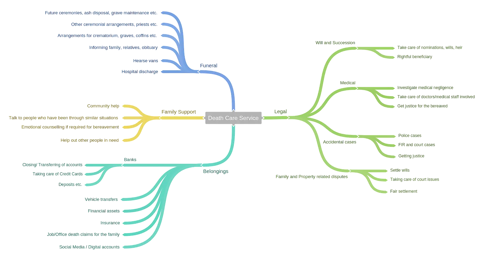
Before proceeding further, I wanted to know what people, who have dealt with death in the family or otherwise, had to say about their experiences in terms of dealing with different stakeholders and the idea of a death-care service. I circulated a survey in my circles and had received quite a response.
Even though the answers varied based on the individual scenario, some common areas of thought were summarised as follows—
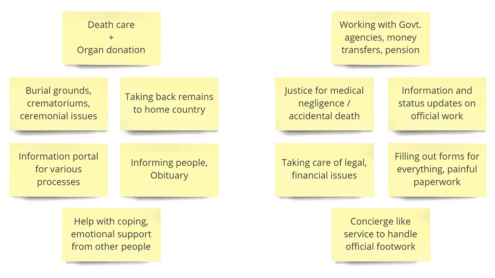
From this it was evident that the problem needed to be addressed in two segments — things that need immediate attention and those that span over a period of time after the death of an individual.
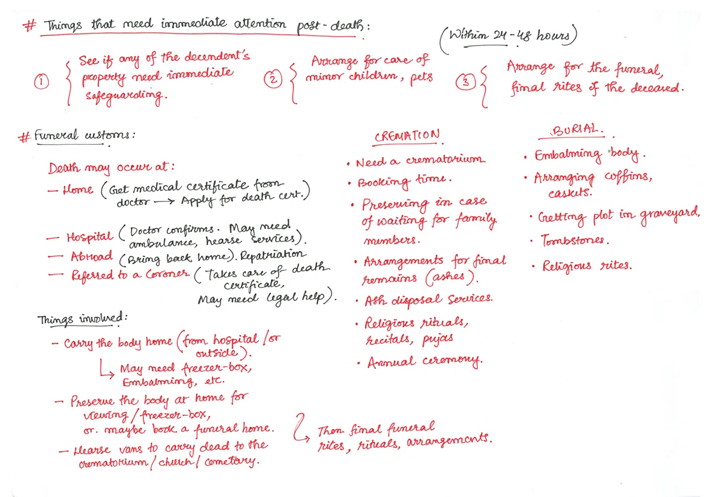
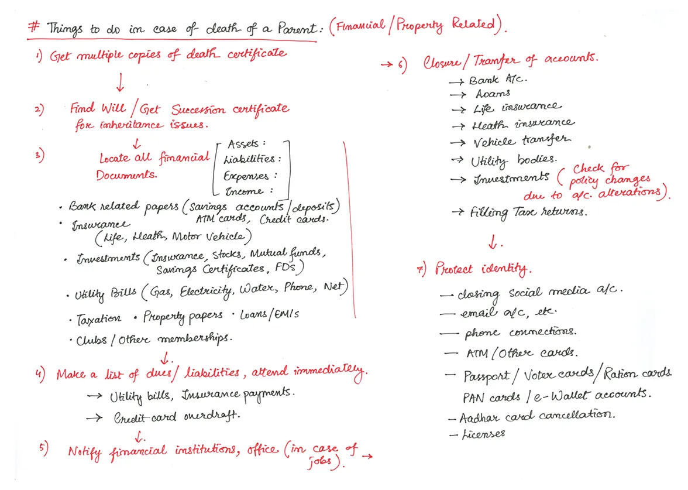
Now that I had a fair understanding of the problem, it was necessary to look into the current state of the death-care services in India. For this purpose, I did a competitive analysis of some prominent service providers in India.
Kashi Moksha Incorporation, a funeral service, managed by a priest operating out of Varanasi.
Moksha-Sibil, an online portal for Hindu final rites from Ahmedabad.
Anthyesti, providing funeral services in Kolkata.
Swargadwara, an Odisha based start-up that supports families in post-death rituals.
Indian Funeral, run by a coffin-maker family from Mumbai that provides last-rites services.
Repatriation service providers like VMEDO and Sanjeevini.
Understanding the bereaved
Based on the research, I mapped the journey of the bereaved, divided into three time-segments — within 24 hours, between 24-48 hours, and a month and beyond. I mapped out the different activities involved and the experience of the bereaved while handling them. For some activities the boundaries are dilute, meaning that they might require immediate addressing, but take a while before they get resolved.
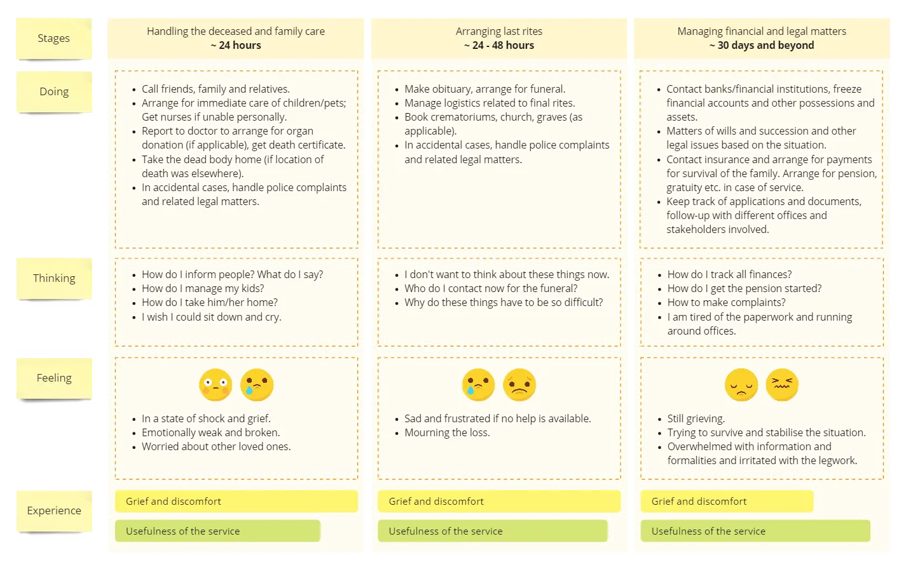
The experience-map presented a number of opportunities for the pain points at every stage. Each of them is a service in itself, which should make up the comprehensive solution for the death-care service.
Designing the service
Given the vast scope of the service, I identified key requirements for the service as a whole and associated attributes/features. This established a basic framework that should encompass all the constituting offerings in the death-care solution.


The user will use the interface to fulfil the requirements. The AI agents will strive to act as the connector between the users and the service providers. However, based on the physical nature of the processes, it will also involve some amount of interaction with the physical agents associated with the stakeholders. The service will integrate the different service providers and stakeholders for easy management and information exchange.
I focussed on designing the user-interface that will be used by the bereaved as a part of the death-care solution.
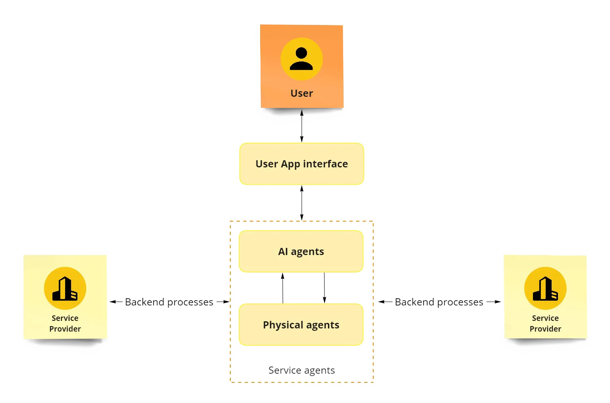
Creating an identity for the service
It was time that I gave a name to this service and delved a bit into graphic design. I decided to call the service, soulace — your companion in the face of distress helping you deal with the loss of your loved one.

The next task was choosing a colour palette. Even though, black and red are usually associated with danger and death, such bold colours would alarm and distress the bereaved. I wanted to use hues that could create a sense of consolation and emotional strength in the difficult times and complement the mourning. I chose flowers used in funerals for colour reference as they are a visual expression of love, sympathy, and respect, as well as a means of lending support and sharing the burden of grief.
The lily is the flower most commonly associated with funeral services as they symbolize the innocence that has been restored to the soul of the departed. The marigold is a commonly used flower in Hindu funerals. It is also known as flor de muerto (flower of death) and is used extensively in Mexico during the El Día de los Muertos, a festival to remember and honour the departed.
Next up was choosing a typeface. It was an important decision because I had decided to use a wordmark for the logo.
I decided to go with Proxima Nova, a geometric sans-serif font by Mark Simonson, simply because of its brilliance and elegance. It combines the strength of Helvetica with the feeling of Futura. It is well adapted for both print and web.
Proxima Nova is a font people can easily connect with, probably because of the qualities I put into the font — the proportions, the spacing, the overall look and feel. I tried to make the shapes of the letters simple and clear. It doesn’t have a lot of fussy details or mannerisms. Maybe it has to do with the open, circular forms, which perhaps give it a “friendly” appearance, especially in the lowercase.
— Mark Simonson


The soulace app
The service will be presented to the user through an assistive-agentive Progressive Web App (PWA) providing an end-to-end service related to death care. The app will be powered by a narrow AI, trained with relevant cases. All the fragmented service providers will be integrated in the back-end with the platform for a seamless user experience.
Progressive Web Apps are user experiences that have the reach of the web, and are Reliable - Load instantly and never show the downasaur, even in uncertain network conditions, Fast - Respond quickly to user interactions with silky smooth animations and no janky scrolling, and Engaging - Feel like a natural app on the device, with an immersive user experience.
— Google
So, why a Progressive Web App (PWA) for soulace?
Unlike other apps, the requirement of soulace will probably be a few times during one’s lifetime. When it happens, it is best to not make the user go through the hassle of searching, downloading and installing the app before the services can be availed.
PWAs can be used for both web use as well as mobile use, thus removing the need for creating and maintaining multiple website and apps.
PWAs can access native mobile features including GPS, push notifications and camera. On a mobile device, it provides an experience similar to a native app (can be ‘installed’, added to Home-screen and used in full-screen mode without a browser shell).
It has a low friction in terms of distribution and discoverability. The user doesn’t need to download updates every time some new bug is fixed and rolled out by the developers.
PWAs by nature are very fast thanks to caching information in the browser and app. It performs well even with poor internet connection. Even if a user has no internet connection, the PWA can still send background updates and push notifications to the user.
One of the preliminary ideas was to have a voice-UI that assists the user. However, given the emotional condition of the user, is was not prudent to expect them to talk to a device or learn how to use the app. What was required was an interface that would give the user the perception of control and support, while handling the assistive tasks in the background.
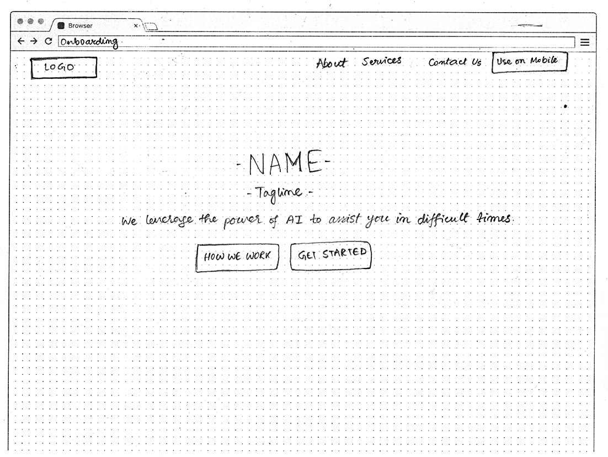
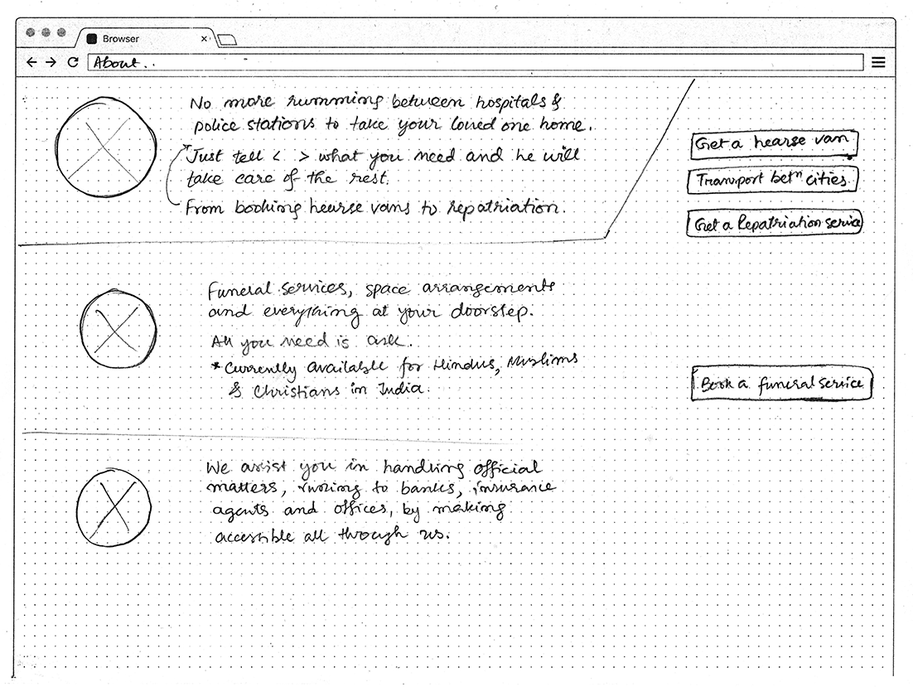
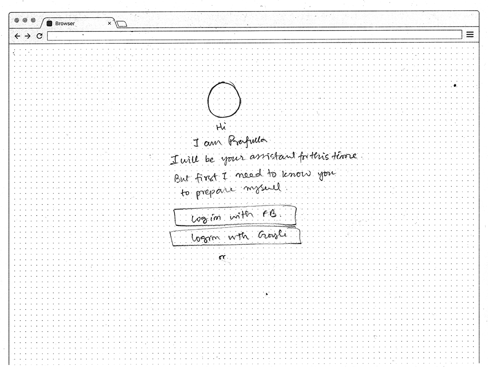
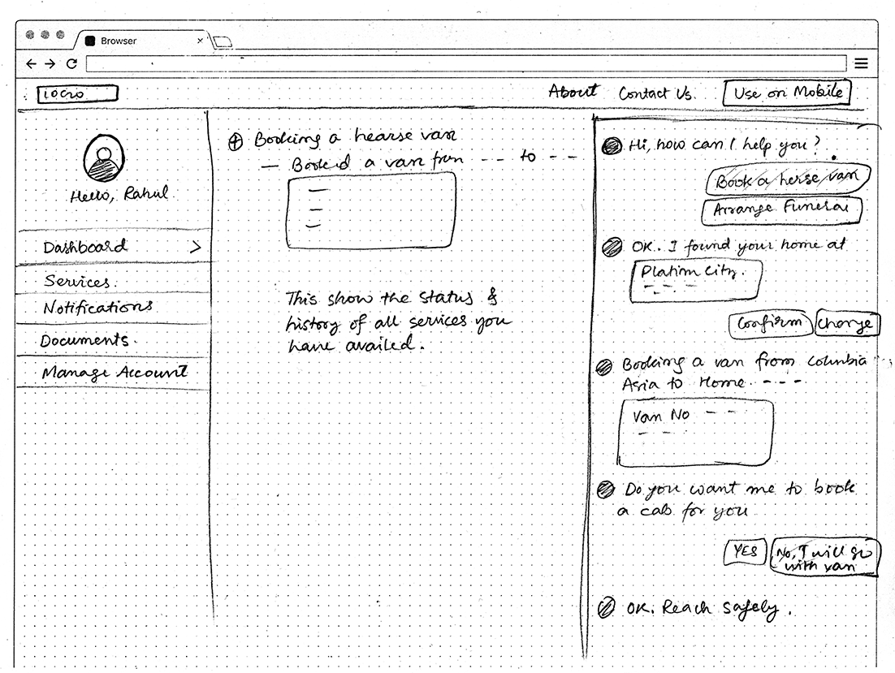
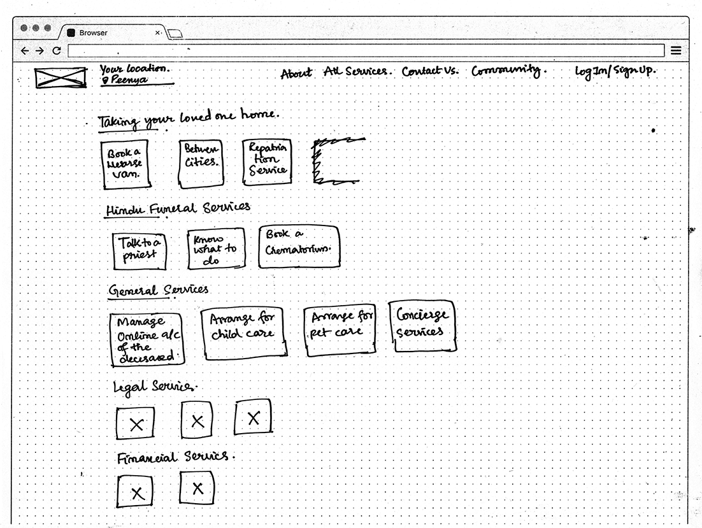
The final design focussed on two major items — search and service listing. Information related to the service in general is pushed down to the bottom of the page. I created the design in Adobe XD using a standard 12-column responsive grid. It was later adapted to a mobile-screen size and a prototype was made.
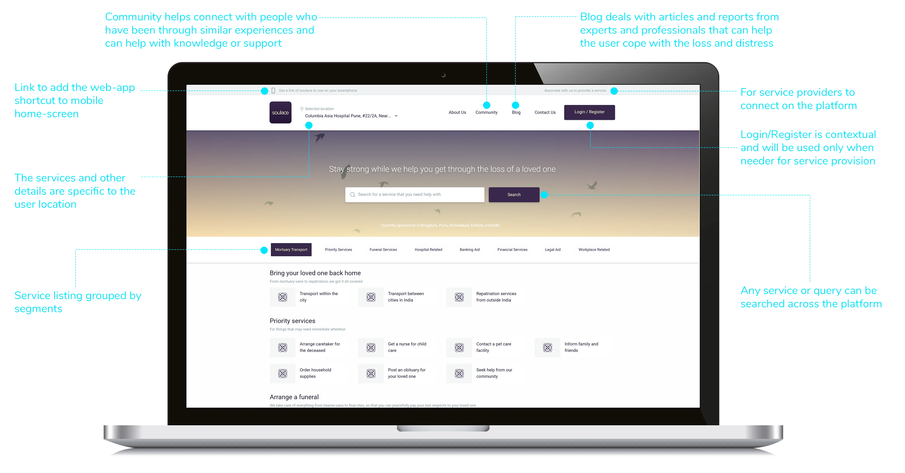
Using soulace
Madhavi Choudhary is a 32-year old housewife who lives in Pune with her husband Prafulla and Pramit, their 13-year-old son. The family originally hails from Kolkata but shifted to Pune, a couple of months back, when Prafulla had got a promotion at Infosys, where he worked as a Software-engineer.
Prafulla was admitted to Columbia Asia Hospital, Pune because of a cardiac arrest, which, sadly he couldn’t survive. Now, Madhavi has to take him back to Kolkata to their hometown for the funeral. In the wake of the sudden distress, she was clueless as to how to work things out single-handedly. Even though some of the local friends and colleagues came to help, Madhavi could see herself drown in a pool of suggestions and misdirections. A single young female in a vulnerable condition, she was as much worried about the safety and well-being of Pramit and herself as taking Prafulla back home.
— An imaginary scenario based on true experiences
As Madhavi googled about how to take a deceased back home to Kolkata, she came across soulace. The following is a demonstration of how the service came to her aid.